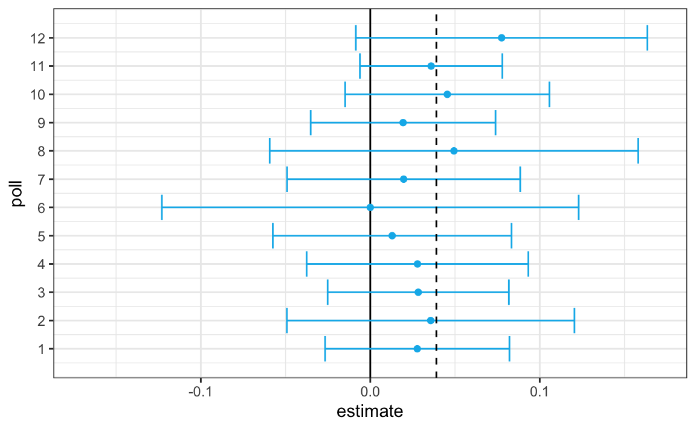
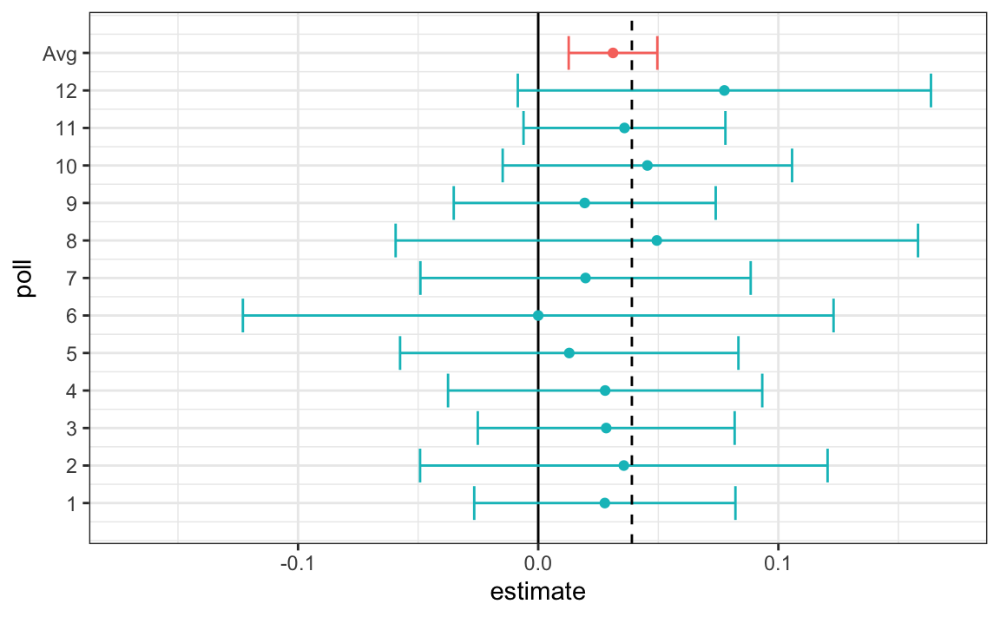
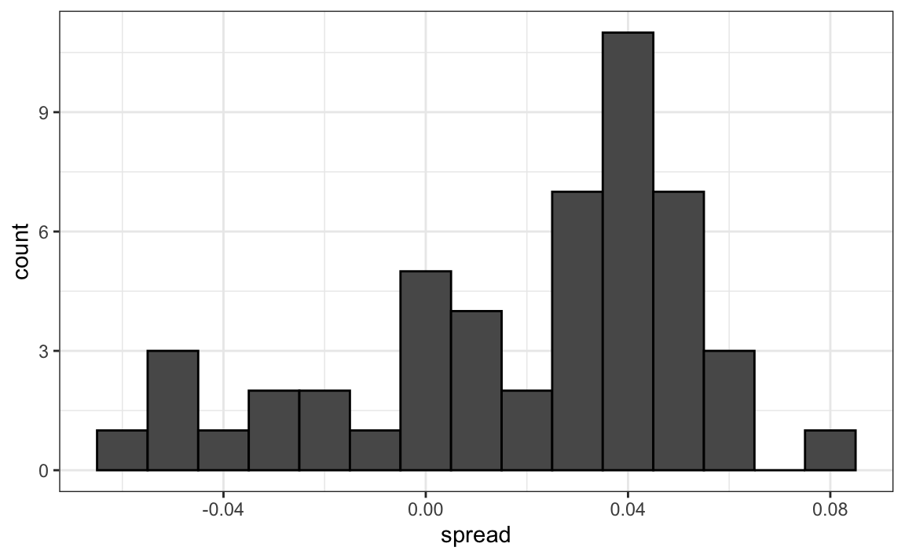
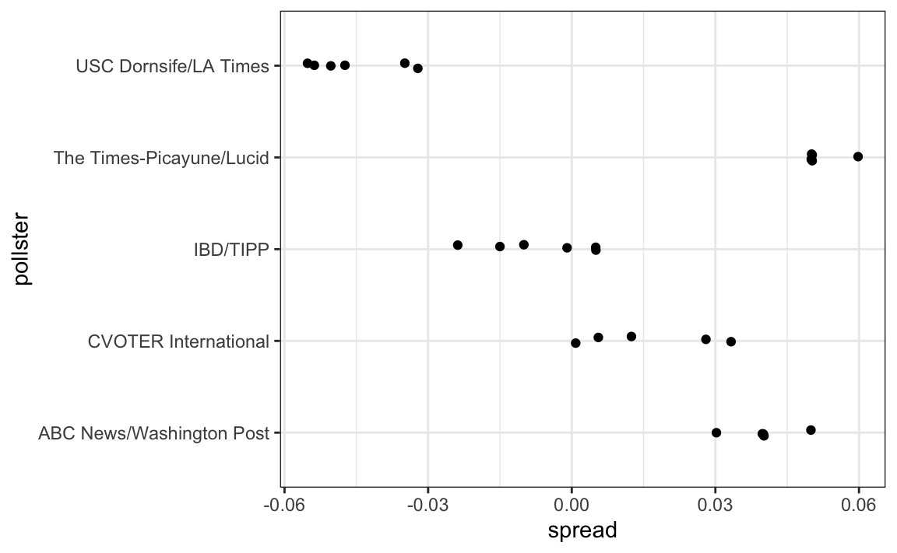
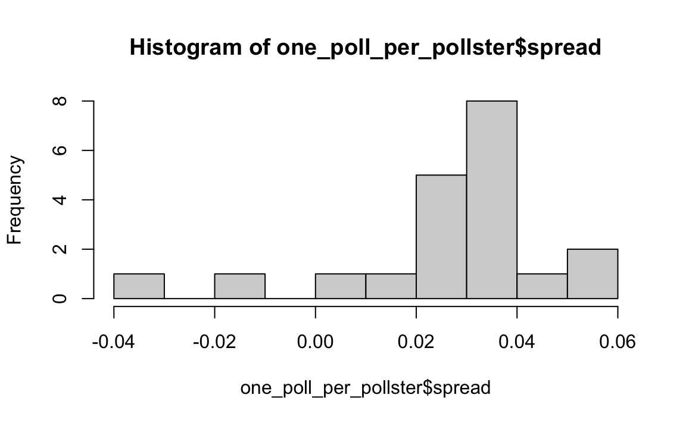
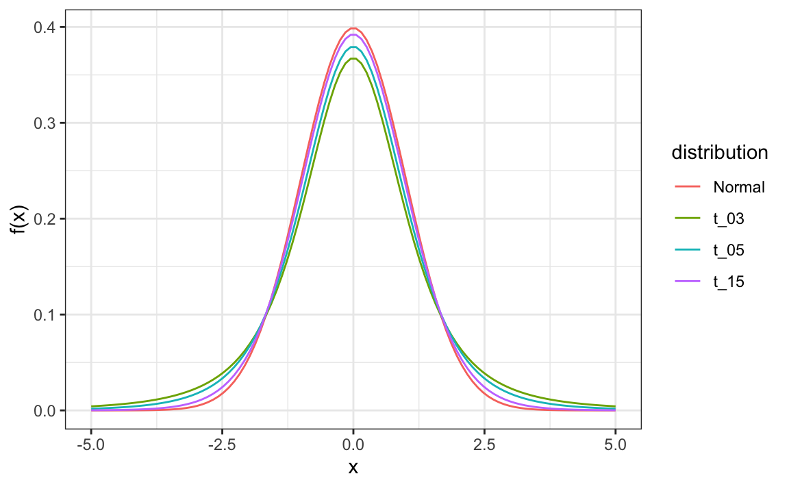

library(tidyverse)
library(dslabs)
mu <- 0.039
Ns <- c(1298, 533, 1342, 897, 774, 254, 812, 324, 1291, 1056, 2172, 516)
p <- (mu + 1) / 2
polls <- map_df(Ns, function(N) {
x <- sample(c(0, 1), size = N, replace = TRUE, prob = c(1 - p, p))
x_hat <- mean(x)
se_hat <- sqrt(x_hat * (1 - x_hat) / N)
list(estimate = 2 * x_hat - 1,
low = 2*(x_hat - 1.96*se_hat) - 1,
high = 2*(x_hat + 1.96*se_hat) - 1,
sample_size = N)
}) |> mutate(poll = seq_along(Ns))11 Data-driven models
“All models are wrong, but some are useful.” –George E. P. Box
So far, our analysis of poll-related results has been based on a simple sampling model. This model assumes that each voter has an equal chance of being selected for the poll, similar to picking beads from an urn with two colors. However, in this section, we explore real-world data and discover that this model is incorrect. Instead, we propose a more effective approach in which we directly model the outcomes of pollsters rather than the polls themselves.
A more recent development since the original invention of opinion polls, is the use of computers to aggregate publicly available data from different sources and develop data-driven forecasting models. Here, we explore how poll aggregators collected and combined data reported by different experts to produce improved predictions. We will introduce ideas behind the statistical models used to improve election forecasts beyond the power of individual polls. Specifically, we introduce a useful model for constructing a confidence interval for the difference in popular vote.
It’s important to note that this chapter only provides a glimpse into the vast realm of statistical models. For instance, the model we describe here does not allow us to assign a probability to a particular candidate winning the popular vote, as done by popular poll aggregators such as FiveThirtyEight. In the next section, we delve into Bayesian models, which provide the mathematical framework to make such probabilistic statements. Furthermore, in #sec-linear-models, we discuss linear models, which are widely used in statistical modeling. However, these introductions are just scratching the surface, and readers interested in statistical modeling should supplement the material presented in this book with additional references.
11.1 Case study: poll aggregators
As we described earlier, a few weeks before the 2012 election, Nate Silver was giving Obama a 90% chance of winning. How was Mr. Silver so confident? We will use a Monte Carlo simulation to illustrate the insight Mr. Silver had, and which others missed. To do this, we generate results for 12 polls taken the week before the election. We mimic sample sizes from actual polls, construct, and report 95% confidence intervals for each of the 12 polls. We save the results from this simulation in a data frame and add a poll ID column.
Here is a visualization showing the intervals that the pollsters would have reported for the difference between Obama and Romney:

Not surprisingly, all 12 polls report confidence intervals that include the election night result (dashed line). However, all 12 polls also include 0 (solid black line) as well. Therefore, if asked individually for a prediction, the pollsters would have to say: it’s a toss-up. Below, we describe a key insight they are missing.
Poll aggregators, such as Nate Silver, realized that by combining the results of different polls you could greatly improve precision. By doing this, we are effectively conducting a poll with a huge sample size. We can, therefore, report a smaller 95% confidence interval and a more precise prediction.
Although, as aggregators, we do not have access to the raw poll data, we can use mathematics to reconstruct what we would have obtained had we made one large poll with:
sum(polls$sample_size)
#> [1] 11269participants. Basically, we construct an estimate of the spread, let’s call it \(\mu\), with a weighted average in the following way:
Once we have an estimate of \(\mu\), we can construct an estimate for the proportion voting for Obama, which we can then use to estimate the standard error. Once we do this, we see that our margin of error is 0.0184545.
Thus, we can predict that the spread will be 3.1, plus or minus 1.8, which not only includes the actual result we eventually observed on election night, but is quite far from including 0. Once we combine the 12 polls, we become quite certain that Obama will win the popular vote.

However, this was just a simulation to illustrate the idea. Let’s look at real data from the 2016 presidential election. Specifically, the following subset of the polls_us_election_2016 data in dslabs includes results for national polls as well as state polls taken during the year prior to the election and organized by FiveThirtyEight. For this first example, we will filter the data to include national polls conducted during the week before the election. We also remove polls that FiveThirtyEight has determined to be unreliable and graded with a “B” or less. Some polls have not been graded, and we include those:
We add a spread estimate:
polls <- polls |>
mutate(spread = rawpoll_clinton/100 - rawpoll_trump/100)For this example, we will assume that there are only two parties, and call \(p\) the proportion voting for Clinton and \(1-p\) the proportion voting for Trump. We are interested in the spread \(2p-1\). Let’s call the spread \(\mu\) (for difference).
We have 49 estimates of the spread. The theory we learned from sampling models tells us that these estimates are a random variable with a probability distribution that is approximately normal. The expected value is the election night spread \(\mu\) and the standard error is \(2\sqrt{p (1 - p) / N}\). Assuming the urn model we described earlier is a good one, we can use this information to construct a confidence interval based on the aggregated data. The estimated spread is:
and the standard error is:
So we report a spread of 1.43% with a margin of error of 0.66%. On election night, we discover that the actual percentage was 2.1%, which is outside a 95% confidence interval. What happened?
A histogram of the reported spreads reveals a problem:
polls |> ggplot(aes(spread)) + geom_histogram(color = "black", binwidth = .01)
The data does not appear to be normally distributed, and the standard error appears to be larger than 0.0066232. The theory is not working here, and in the next section, we describe a useful data-driven model.
11.2 Beyond the simple sampling model
Notice that data come from various pollsters, and some are taking several polls a week:
Let’s visualize the data for the pollsters that are regularly polling:

This plot reveals an unexpected result. First, consider that the standard error predicted by theory for each poll is between 0.018 and 0.033:
polls |> group_by(pollster) |>
filter(n() >= 6) |>
summarize(se = 2*sqrt(p_hat*(1 - p_hat)/median(samplesize)))
#> # A tibble: 5 × 2
#> pollster se
#> <fct> <dbl>
#> 1 ABC News/Washington Post 0.0265
#> 2 IBD/TIPP 0.0333
#> 3 Ipsos 0.0225
#> 4 The Times-Picayune/Lucid 0.0196
#> 5 USC Dornsife/LA Times 0.0183This agrees with the within poll variation we see. However, there appears to be differences across the polls. Observe, for example, how the USC Dornsife/LA Times pollster is predicting a 4% lead for Trump, while Ipsos is predicting a lead larger than 5% for Clinton. The theory we learned says nothing about different pollsters producing polls with different expected values, instead it assumes all the polls have the same expected value. FiveThirtyEight refers to these differences as house effects. We also call them pollster bias. Nothing in our simple urn model provides an explanation for these pollster-to-pollster differences.
This model misspecification led to an overconfident interval that ended up not including the election night result. So, rather than modeling the process generating these values with an urn model, we instead model the pollster results directly. To do this, we start by collecting some data. Specifically, for each pollster, we look at the last reported result before the election:
Here is a histogram of the data for these 15 pollsters:
qplot(spread, data = one_poll_per_pollster, binwidth = 0.01)
#> Warning: `qplot()` was deprecated in ggplot2 3.4.0.
Although we are no longer using a model with red (Republicans) and blue (Democrats) beads in an urn, our new model can also be thought of as an urn model, but containing poll results from all possible pollsters. Think of our $N=$15 data points \(X_1,\dots X_N\) as a random sample from this urn. To develop a useful model, we assume that the expected value of our urn is the actual spread \(\mu=2p-1\), which implies that the sample average has expected value \(\mu\).
Now, because instead of 0s and 1s, our urn contains continuous numbers, the standard deviation of the urn is no longer \(\sqrt{p(1-p)}\). Rather than voter sampling variability, the standard error now includes the pollster-to-pollster variability. Our new urn also includes the sampling variability from the polling. Regardless, this standard deviation is now an unknown parameter. In statistics textbooks, the Greek symbol \(\sigma\) is used to represent this parameter.
So our new statistical model is that \(X_1, \dots, X_N\) are a random sample with expected \(\mu\) and standard deviation \(\sigma\). The distribution, for now, is unspecified. But we consider \(N\) to be large enough to assume that the sample average \(\bar{X} = \sum_{i=1}^N X_i\) follows a normal distribution with expected value \(\mu\) and standard error \(\sigma / \sqrt{N}\). We write:
\[ \bar{X} \sim \mbox{N}(\mu, \sigma / \sqrt{N}) \] Here the \(\sim\) symbol tells us that the random variable on the left of the symbol follows the distribution on the right. We use the notation \(N(a,b)\) to represent the normal distribution with mean \(a\) and standard deviation \(b\).
This model for the sample average will be used again the next chapter.
11.2.1 Estimating the standard deviation
The model we have specified has two unknown parameters: the expected value \(\mu\) and the standard deviation \(\sigma\). We know that the sample average \(\bar{X}\) will be our estimate of \(\mu\). But what about \(\sigma\)?
Our task is to estimate \(\mu\). Given that we model the observed values \(X_1,\dots X_N\) as a random sample from the urn, for a large enough sample size \(N\), the probability distribution of the sample average \(\bar{X}\) is approximately normal with expected value \(\mu\) and standard error \(\sigma/\sqrt{N}\). If we are willing to consider \(N=15\) large enough, we can use this to construct confidence intervals.
Theory tells us that we can estimate the urn model \(\sigma\) with the sample standard deviation defined as:
\[ s = \sqrt{ \frac{1}{N-1} \sum_{i=1}^N (X_i - \bar{X})^2 } \]
Keep in mind that, unlike for the population standard deviation definition, we now divide by \(N-1\). This makes \(s\) a better estimate of \(\sigma\). There is a mathematical explanation for this, which is explained in most statistics textbooks, but we do not cover it here.
The sd function in R computes the sample standard deviation:
sd(one_poll_per_pollster$spread)
#> [1] 0.024211.2.2 Computing a confidence interval
We are now ready to form a new confidence interval based on our new data-driven model:
Our confidence interval is wider now since it incorporates the pollster variability. It does include the election night result of 2.1%. Also, note that it was small enough not to include 0, which means we were confident Clinton would win the popular vote.
11.2.3 The t-distribution
Above, we made use of the CLT with a sample size of 15. Because we are estimating a second parameters \(\sigma\), further variability is introduced into our confidence interval, which results in intervals that are too small. For very large sample sizes, this extra variability is negligible, but in general, for values smaller than 30, we need to be cautious about using the CLT. However, if the data in the urn is known to follow a normal distribution, then we actually have mathematical theory that tells us how much bigger we need to make the intervals to account for the estimation of \(\sigma\). Applying this theory, we can construct confidence intervals for any \(N\). But again, this works only if the data in the urn is known to follow a normal distribution. So for the 0, 1 data of our previous urn model, this theory definitely does not apply.
Note that 30 is a very general rule of thumb based on the case when the data come from a normal distribution. There are cases when a large sample size is needed as well as cases when smaller sample sizes are good enough.
The statistic on which confidence intervals for \(\mu\) are based is:
\[ Z = \frac{\bar{X} - \mu}{\sigma/\sqrt{N}} \]
CLT tells us that Z is approximately normally distributed with expected value 0 and standard error 1. But in practice we don’t know \(\sigma\), so we use:
\[ t = \frac{\bar{X} - \mu}{s/\sqrt{N}} \]
This is referred to as a t-statistic. By substituting \(\sigma\) with \(s\), we introduce some variability. The theory tells us that \(t\) follows a student t-distribution with \(N-1\) degrees of freedom. The degrees of freedom is a parameter that controls the variability via fatter tails:

If we are willing to assume the pollster effect data is normally distributed, based on the sample data \(X_1, \dots, X_N\),
then \(t\) follows a t-distribution with \(N-1\) degrees of freedom. So perhaps a better confidence interval for \(\mu\) is:
A bit larger than the one using normal is:
qt(0.975, 14)
#> [1] 2.14is bigger than:
qnorm(0.975)
#> [1] 1.96This results in a slightly larger confidence interval than we obtained before:
#> start end
#> 1 1.6 4.2Note that using the t-distribution and the t-statistic is the basis for t-tests, a widely used approach for computing p-values. To learn more about t-tests, you can consult any statistics textbook.
The t-distribution can also be used to model errors in bigger deviations that are more likely than with the normal distribution, as seen in the densities we previously observed. FiveThirtyEight uses the t-distribution to generate errors that better model the deviations we see in election data. For example, in Wisconsin, the average of six polls was 7% in favor of Clinton with a standard deviation of 1%, but Trump won by 0.7%. Even after taking into account the overall bias, this 7.7% residual is more in line with t-distributed data than the normal distribution.
polls_us_election_2016 |>
filter(state == "Wisconsin" &
enddate >= "2016-10-31" &
(grade %in% c("A+", "A", "A-", "B+") | is.na(grade))) |>
mutate(spread = rawpoll_clinton/100 - rawpoll_trump/100) |>
mutate(state = as.character(state)) |>
left_join(results_us_election_2016, by = "state") |>
mutate(actual = clinton/100 - trump/100) |>
summarize(actual = first(actual), avg = mean(spread),
sd = sd(spread), n = n()) |>
select(actual, avg, sd, n)
#> actual avg sd n
#> 1 -0.007 0.0711 0.0104 611.3 Exercises
We have been using urn models to motivate the use of probability models. Yet, most data science applications are not related to data obtained from urns. More common are data that come from individuals. The reason probability plays a role here is because the data come from a random sample. The random sample is taken from a population, and the urn serves as an analogy for the population.
Define the males that replied to the height survey as the population
to answer the following questions.
1. Mathematically speaking, x is our population. Using the urn analogy, we have an urn with the values of x in it. What are the average and standard deviation of our population?
2. Call the population average computed above \(\mu\) and the standard deviation \(\sigma\). Now take a sample of size 50, with replacement, and construct an estimate for \(\mu\) and \(\sigma\).
3. What does the theory tell us about the sample average \(\bar{X}\) and how it is related to \(\mu\)?
- It is practically identical to \(\mu\).
- It is a random variable with expected value \(\mu\) and standard error \(\sigma/\sqrt{N}\).
- It is a random variable with expected value \(\mu\) and standard error \(\sigma\).
- Contains no information.
4. So, how is this useful? We are going to use an oversimplified yet illustrative example. Suppose we want to know the average height of our male students, but we can only measure 50 of the 708. We will use \(\bar{X}\) as our estimate. We know from the answer to exercise 3 that the standard estimate of our error \(\bar{X}-\mu\) is \(\sigma/\sqrt{N}\). We want to compute this, but we don’t know \(\sigma\). Based on what is described in this section, show your estimate of \(\sigma\).
5. Now that we have an estimate of \(\sigma\), let’s call our estimate \(s\). Construct a 95% confidence interval for \(\mu\).
6. Now run a Monte Carlo simulation in which you compute 10,000 confidence intervals as you have just done. What proportion of these intervals include \(\mu\)?
7. Use the qnorm and qt functions to generate quantiles. Compare these quantiles for different degrees of freedom for the t-distribution. Use this to motivate the sample size of 30 rule of thumb.